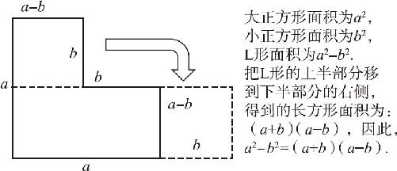
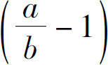

两个数差的平方，不等于两个数的平方的差；那么两个数的平方差等于什么呢？接下来，我们一起研究一下平方差公式．
如图12－5所示，如果在一个边长是a 的正方形的右上角，切去一个边长是b 的小正方形，就会剩下一个大L形，它的面积就等于大正方形的面积减去小正方形的面积．同时，L形的面积还有另一种算法，我们可以把L形的上半部分裁剪下来，移动到右侧．由于这个L形的高度等于a ，上半部分的高度为小正方形的边长b ，它的宽度等于大正方形的边长a 减去小正方形的边长b ．把上半部分裁剪下来移动到右侧以后，就会发现，我们拼成了一个新的长方形，这个长方形的高度是a －b ，长度是a ＋b ，因此它的面积就是（a ＋b ）（a －b ）．这就是平方差公式：两个数的和跟差的乘积，就等于两个数的平方差．用代数式可以表示为：a 2 －b 2 ＝（a ＋b ）（a －b ）．

图12－5
这个结果对不对呢？我们再通过多项式的乘法公式验证一下：把因式依次展开，得到：
（a ＋b ）（a －b ）
＝（a ＋b ）a －（a ＋b ）b
＝a 2 ＋b a －a b －b 2
＝a 2 －b 2
看起来还真是对的．接下来，还可以通过一个特例来验证一下：101×99等于多少？如果我们把101看作100＋1，把99看作100－1，两项相乘就可以套用平方差公式了，具体过程如下：
101×99
＝（100＋1）（100－1）
＝1002 －12
＝10000－1
＝9999
经过反复验证，我们发现平方差公式确实是正确的．接下来，我们来探讨一个有意思的话题，两个数的平方差和差的平方，两者谁大谁小呢？比如10和8，它们的平方差大呢，还是差的平方大呢？那我们就试一试，10和8的平方分别是100和64，两者之差是36；但是它们的差是2，2的平方是4，看起来，平方差比这个差的平方大不少．是不是所有的数字都是这样呢？我们就用这两个代数公式验证一下：我们用这个平方差，减去差的平方，得到：
（a 2 －b 2 ）－（a －b ）2
＝a 2 －b 2 －（a 2 －2a b ＋b 2 ）
＝2a b －2b 2
＝2b 2

通过这个结果可以发现：当b 不等于0的情况下，如果a 除以b 大于1，那么平方差更大；相反，如果a 除以b 小于1，那么就是差的平方更大．我们分别研究了完全平方公式和平方差公式，接下来我们通过两道例题巩固一下已有的知识．
（a 2 b ＋b ）（a 2 －1）＝？第一眼看过去，这个算式跟前面学的公式没什么关系，别急，让我们仔细看看，前边的（a 2 b ＋b ），前后两项都含有b ，如果通过乘法分配律提取出一个公因式b ，就可以变成b （a 2 ＋1），此时我们再看一下原来的题目，原式还有一个（a 2 －1），两式相乘，可以凑成平方差公式，按此思路，得到：
（a 2 b ＋b ）（a 2 －1）
＝b （a 2 ＋1）（a 2 －1）
＝b ［（a 2 ）2 －12 ］
＝b （a 4 －1）
＝a 4 b －b
接下来再看一个题目，（3－x ）（x －3）等于多少？我们大概一看，这个算式好像是平方差公式，因为前后两个算式是相反的．可是仔细一想，发现题目中并没有两数相加的部分．那么它到底符合哪个公式呢？我们不妨对比一下x －3和3－x ，这两个算式是什么关系呢，它们彼此互为相反数，因此，我们只需要提取一个－1作为公因式，就可以把两个算式变成一样的，比如我们把3－x 也变成－（x －3），那么就得到负的（x －3）的平方，按此思路解得：
（3－x ）（x －3）
＝－（x －3）2
＝－（x 2 －2×3×x ＋32 ）
＝－（x 2 －6x ＋9）
＝－x 2 ＋6x －9
我们学了多项式的乘法公式、完全平方公式和平方差公式．我们发现所有的多项式乘法公式，都是从乘法分配律中派生出来的，只要把相乘的各项逐个相乘再相加，就可以得到最终的结果．不过，当完全平方公式展开以后，它丝毫没有把算式简化的意思，比如：a ＋b 的平方，只要经过一次加法、一次乘法就可以得到结果，可是如果我们把它展开以后呢，就得到了a 2 ＋2a b ＋b 2 ，这个算式里边有多少次计算呢？如果你数一下就会发现，结果竟然变成了6次计算，比原来的a ＋b 的平方复杂了三倍，为什么我们要费这么大劲把它们展开呢？